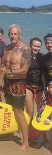

Peter Robinson

Pete has been an integral part of the Koh Samui Surf Lifesaving Club's Sunday morning program, always there to lend a hand and support the children in the water.
Pete has also been a valued member of the Rotary Swim for Life program, where he has helped teach children to swim and, importantly, built strong relationships and rapport with them along the way.
That connection has made Pete an important part of the transition from the swimming pool to the ocean. Many of the children already know and trust him when they arrive at the Surf Lifesaving Club, helping them feel comfortable as they take the next step into open-water swimming and ocean safety.
His consistency, enthusiasm and connection with the kids have made him an integral part of the Sunday team, and we are incredibly grateful for everything Pete contributes to the program.